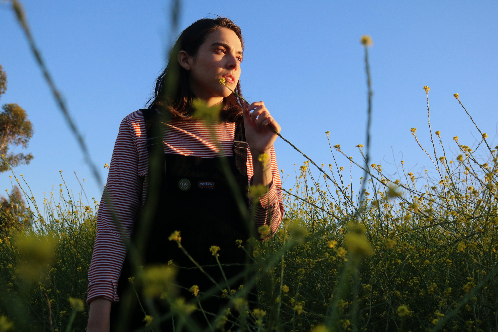
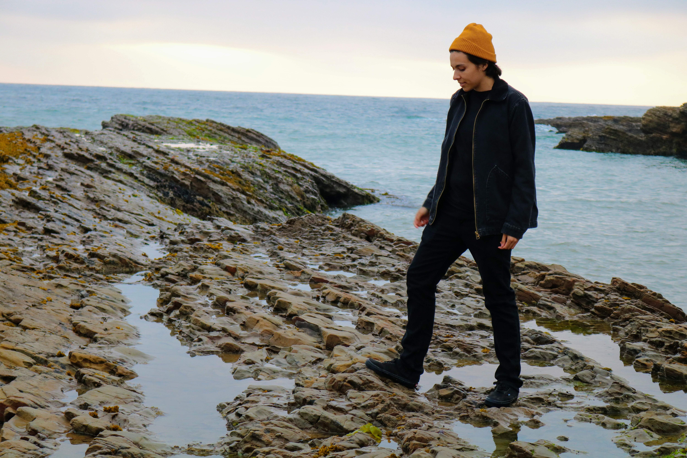
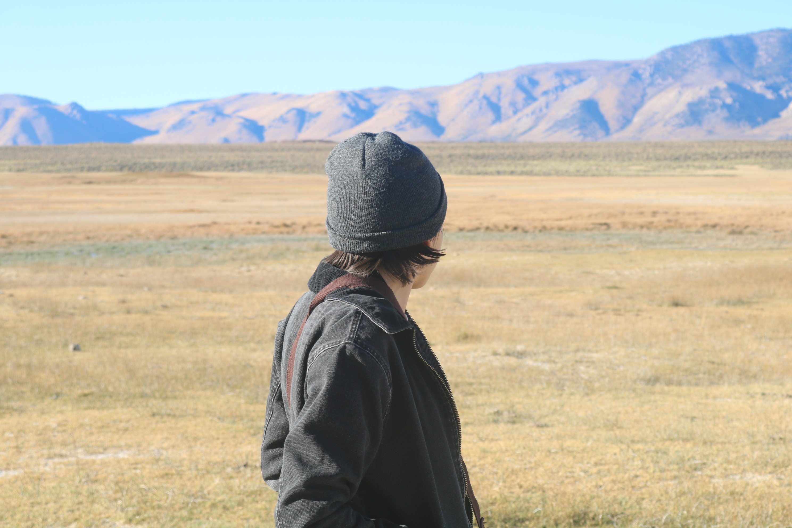

Photos
Graduation Photo

This is one of my graduation photos. It was taken last minute with a friend of mine. I enjoy this photo because it was taken unformally by a good friend of mine who I felt very comfortable around. Since I didnt get to walk like the rest of my Spring and Summer 2020 class, it was nice because people who passed by congradulated me from a distance.
Photo In My Favorite Hiking Area
This photo is also a part of my graduation portraits. It was taken in my favorite hiking area. It is my favorite during the spring because the floweres are in bloom.
Joshua Tree National Park

This photo showcases my love for photography. In most photos taken of me I am usually in the middle of taking a photo. This was my second time in Joshua Tree National Partk, I like it because I love rocks and boulders are basically huge rocks.
San Luis Obispo
I belive I might have been at Lovers Cove in San Luis Obispo. There was this natually formed rock path that lead you to the ocean. It was amazing to be so close to the water.
Mamoth Lakes
This is one of my favorite trips that I hope to visit soon again. It was my birthday and I always wanted to see Mammoth Lakes, so I went. It was an amazing trip and I saw alot of dear.